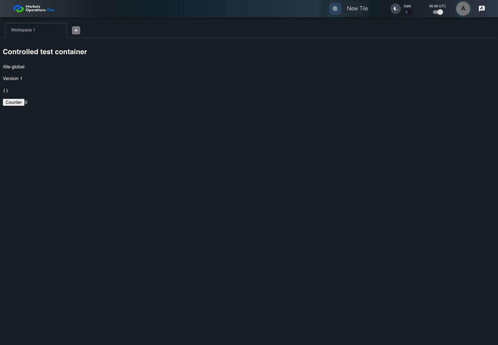
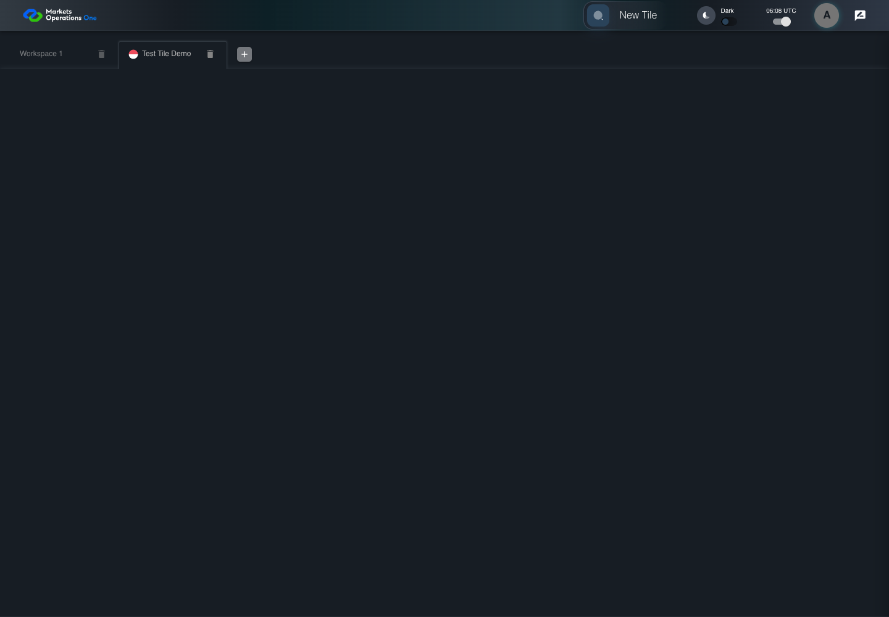
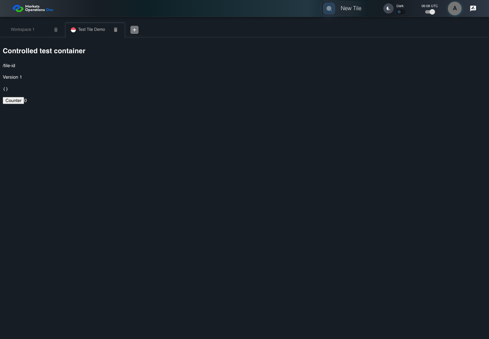

UI-CAT-015 launch Indonesia once
PASS · application/run-050/ui-cat-015-launch-indonesia-once-dc72eacc9ef0-attempt-1 · ACTUAL_APPLICATION_LOCAL_SERVICES
Actual current React shell. Controlled login, validation, and activity renewal responses supply UI-USER-01, catalog, and entities. A controlled SystemJS React container displays routes and parameters. Local fixture SVGs replace catalog images. Identity, entitlements, and business tenant behavior are not established.
2026-10-22T06:07:58.897Z to 2026-10-22T06:08:03.427Z
Assertions and result · Artifact manifest · Exact run inputs and source hashes
Result SHA-256:55f0dcf8efa1bcf2880c86d7621c785954e6a0066f0bc9a6eaaeacdc4ccecd1bScreenshot capture: CAPTURED. Named frames: 7.
Step screenshot bindings: COMPLETE. 6/6 canonical steps have execution screenshots.
Bindings measure structural coverage only. They do not establish screenshot content quality or relevance.
Screenshot content review: NOT_REVIEWED. Recorded context: 0/7 frames. Identical image bytes: 3 repeated frames. Recorded context does not establish human visual review.
Canonical step timeline
Given User A is authenticated as fixture UI-USER-01 with the case-specific permissions
Execution: PASSED.
1. step-01 Visible state after step 1: Given User A is authenticated as fixture UI-USER-01 with the case-specific permissions
2026-10-22T06:08:00.970Z · 1440×1000
Step: /Users/lushevol/code/github/ratan-release-impact/workbench/tasks/ui-test-coverage-20261022/test-cases.md:6718
SHA-256:8b8f02f2b6c0d57e4fa27e478988f88e516ee84f3561b579bafb0816bb3ed0e6And Global and Indonesia are enabled in one card
Execution: PASSED.2. step-02 Visible state after step 2: And Global and Indonesia are enabled in one card
2026-10-22T06:08:01.133Z · 1440×1000
Step: /Users/lushevol/code/github/ratan-release-impact/workbench/tasks/ui-test-coverage-20261022/test-cases.md:6719
SHA-256:48f462eaac49492090f9f1612d1abc84c1a74722d9c725aae8d2b32f056927dbWhen User A clicks button named "Indonesia" inside the section identified by title "Test Tile" and subtitle "Demo"
Execution: PASSED.
3. step-03 Visible state after step 3: When User A clicks button named "Indonesia" inside the section identified by title "Test Tile" and subtitle "Demo"
2026-10-22T06:08:01.236Z · 1440×1000
Step: /Users/lushevol/code/github/ratan-release-impact/workbench/tasks/ui-test-coverage-20261022/test-cases.md:6720
SHA-256:0128b1e97b7f57da8c081709e539193718109810dc12885802f940836422dce7Then text with text "/tile-id" inside the selected new tile tabpanel is visible
Execution: PASSED.
4. step-04 Visible state after step 4: Then text with text "/tile-id" inside the selected new tile tabpanel is visible
2026-10-22T06:08:02.088Z · 1440×1000
Step: /Users/lushevol/code/github/ratan-release-impact/workbench/tasks/ui-test-coverage-20261022/test-cases.md:6721
SHA-256:fdfff91816fee6182ce2a07aac5475ec3c66030bf0d2b17f05940898867ba1eaAnd the workspace count increases by exactly 1
Execution: PASSED.
5. step-05 Visible state after step 5: And the workspace count increases by exactly 1
2026-10-22T06:08:02.140Z · 1440×1000
Step: /Users/lushevol/code/github/ratan-release-impact/workbench/tasks/ui-test-coverage-20261022/test-cases.md:6722
SHA-256:fdfff91816fee6182ce2a07aac5475ec3c66030bf0d2b17f05940898867ba1eaImage bytes match frame 4. An unchanged image can be valid for consecutive assertions. This match does not establish correct step content.
And no newly added workspace tabpanel contains visible text "/tile-global"
Execution: PASSED.
6. step-06 Visible state after step 6: And no newly added workspace tabpanel contains visible text "/tile-global"
2026-10-22T06:08:02.218Z · 1440×1000
Step: /Users/lushevol/code/github/ratan-release-impact/workbench/tasks/ui-test-coverage-20261022/test-cases.md:6723
SHA-256:fdfff91816fee6182ce2a07aac5475ec3c66030bf0d2b17f05940898867ba1eaImage bytes match frame 5. An unchanged image can be valid for consecutive assertions. This match does not establish correct step content.
Additional named frames

The final visible state after the named test assertions.
2026-10-22T06:08:02.365Z · 1440×1000Step: Test source: /Users/lushevol/code/github/ratan-release-impact/workbench/e2e/audit-specs/catalog-profile-expanded.spec.ts:101
SHA-256:
fdfff91816fee6182ce2a07aac5475ec3c66030bf0d2b17f05940898867ba1eaImage bytes match frame 6. An unchanged image can be valid for consecutive assertions. This match does not establish correct step content.
Screenshots establish visible state only. Assertions and traces support functional claims.